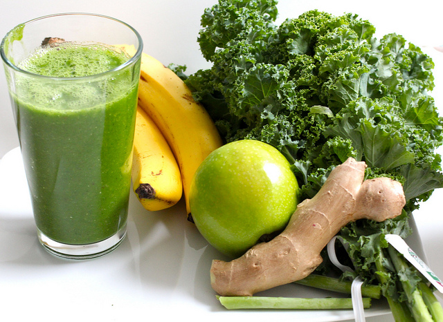
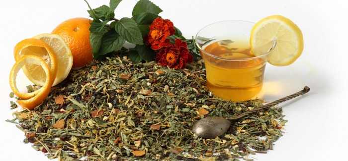

Green Juice for Wellness
Jamillah is a 36 year old single mother of three who lives five blocks from the restaurant. She was raised on soul food but would like to learn about healthy alternatives. Jamillah is also 30 lbs overweight and borderline diabetic but she has recently began to attend an aqua aerobics class twice a week. She has decided that it's best to implement healthy choices in her life and the life of her family in an effort to avoid health complications later on in life.
10 ways to use coconut oil
1.Cooking Oil Substitute 2.Insect Repellent 3.Deodorant 4.Makeup Remover 5.Toothpaste 6.Lip Balm 7.Dandruff Relief 8.Coffee Creamer 9.Butter substitute 10. Moisturizer
Try Tumeric for healthy glowing flawless skin
The skin is the outermost layer of the body that is often easily damaged by environmental factors as well as stress and poor eating habits. Although there is a wide market for cosmetic products that offers to improve skin problems, nature also provides a solution to these. Natural treatments for skin that give lasting results are often better than expensive commercial products and cosmetic procedures. One such natural treatment is turmeric powder for skin.
Try this for a morning pick me up
In my quest for an ingestible, natural energy booster that would work almost as well as my favorite activity-based energy boosters—going for a walk or bouncing on a big exercise ball—I happily discovered several great replacements for caffeine, with no nasty side effects when used properly. My top 3 are listed here. 1. Ginger. This incredible root has a long and storied history as a natural digestive aid. And those of you who have suffered emotional stress and fatigue know that a malfunctioning digestive tract is u sually either the cause of such stress and fatigue or the result of it. Ginger, by helping ease the digestive process, helps us remain alert. I can also tell you from experience (and with the confirmation of my favorite Chinese herbalist) that ginger speeds up our metabolism and circulation, not just our digestion. A single cup of fresh ginger-root tea can seriously make you sweat! I shave off several thin slices from a fresh, organic root, and steep it in boiling water for 5-10 minutes. If I am running really low, I’ll chew the slices afterward, too. If you tend to run hot or have a metabolic disorder, please be careful. A tiny amount of ginger is all any of us needs to get the energy boost we’re after: You really can get too much of a good thing when it comes to ginger.
20 foods that kick cancers butt
1.Spinach 2.Kale 3.Collard greens 4.Arugula 5.Dandelion greens 6.Curry 7.Broccoli 8.Broccoli sprouts 9.Cabbage 10.Bok choy 11.Cauliflower 12.Watercress 13.Swiss chard 14.Blueberries 15.Blackberries 16.Raspberries 17.Strawberries 18.Cranberries 19.Red grapes 20.Tomatoes